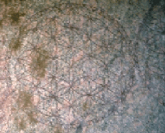

Edward Kelly's "Vision of the Round House"¹ adds further credibility to the texts written by scholars supporting the concept of the creation of humanity by extra-terrestrials through genetic engineering. There is no way Dr. John Dee and Edward Kelly had any knowledge of this in the 16th century. The "Vision of the Round House" is identical: Humanity was created by extra-terrestrials who needed slave laborers in the mines. By taking the ovum from a Cro-Magnon primate and using artificial insemination with a sperm from one of the Nephilim, we were created.
The one known as Satan created us and designed us. He intended to bring us knowledge and make us as the Gods, but he was prevented from doing so and cursed by some of the other Gods. We did not evolve naturally, as opposed to animals who have overall better health and immunity. Satan wished to bring us to perfection, but some of the other Gods wanted for us to be destroyed after the mission was over and since we were becoming an issue, they attempted to let us all drown in the flood.
Satan went against the other Gods and gave us more advanced genetics. The "breath of God" is the soul. The chakras are the psychic energy centers that are activated by breathing in certain ways to enable the Kundalini Serpent to ascend. When the Kundalini Serpent ascends, enlightenment/Godhead is achieved. This is a major step in the working for the Magnum Opus, which gives both psychical and spiritual perfection, along with immortality.
|  | The Tree of Life is Ancient Egyptian in origin. It is actually a pattern, either upright or upside-down for the genetics of life. It plugs into the Flower of Life that has been inscribed upon so many walls in Egyptian temples and also in the pyramids. The Flower of Life is the blueprint for every living thing. In addition, the "Tree of Life" is a map of the human soul, with the trunk symbolizing the spine, the branches the 144,000 nadis, and the fruits symbolizing the rewards |
Fools claim Satan is a "Christian invention." All of the Old Gods were made into Devils and Demons in order to destroy their relations with humans. These are the Gods who have been present throughout the life of the human race and have attempted to give us knowledge and to help us in our times of need. Cities were destroyed; libraries and other places where books were kept were burnt and destroyed. Every culture, such as the Philistines, that worshiped other Gods was made war upon and genocide ensued. The Philistines worshiped Beelzebub. Beelzebub was the God of the Philistine city of Ekron and Zebulon. [Baal [Lord] Zebulon. There are few if any traces of the truth concerning these Gods.
This excerpt quote from the Catholic Encyclopedia is very revealing:
In the same way the Greeks and Romans may have worshipped their divinities, fondly believing them to be good. But the Christian Scriptures declare that all the gods of the Gentiles are demons.
Catholic Encyclopedia: Devil Worship
https://www.newadvent.org/cathen/04767a.htm [click here, and see the third paragraph in the article for proof].
The Old Gods have remained as Devils and Demons just to survive. The Judeo/Christian "God" wishes for the destruction of humanity. Everything that the Bible accuses Satan of is really what the Judeo/Christian "God" truly is... "A Murderer and a Liar from the Beginning." True evil deceives. Most of the "Holy Bible" is comprised of bloodbath after bloodbath, hatred, genocide and exceptional cruelty. This influence can be seen in the Inquisition, anti-life teachings, especially where the abstinence of sexual intercourse is concerned, to stop us from procreating. Moses went on a rampage of war and slaughter when he descended from the mount under the direction of "Jehovah." The incident at Fatima with the virgin bitch revealed the alien contempt for humanity in the hopeful anticipation of our blowing ourselves to bits with nuclear weapons, if one can read between the lines.
With the opening of the watchtowers a small increment, humanity has been flooded with knowledge in the last 100 years that has been unparelled in the whole of history. We have not had time to adapt. This was the sole intention by the angels who communicated the information to Dr. John Dee and Edward Kelly. That the knowledge would act to destroy humanity in a short period of time. 100 years is nothing to the Gods. The fact that they were angels is portrayed by their arrogance and condescending attitude towards the two men. Demons are very friendly and understanding when treated with respect. I have never known Demons to be arrogant.
Most people either study physical science or the occult knowledge. Not very many study both. This is where people would benefit, by studying both, for in the end, it all comes together. Satanism strongly supports and advocates the advancement of the physical sciences. Everything of the so-called "supernatural" and the occult can be scientifically explained. Unfortunately, the physical sciences have not advanced far enough to fully explain the spiritual as of yet. This is why the Christian Churches have vehemently attacked science for centuries. Humanity has been held back dangerously.
Francis Crick, Nobel Prize Winner for the discovery of DNA and his hypothesis of Panspermia
__________________________________________
¹ Enochian Magic by Donald Tyson, First Edition, Second Printing, 2002
Pages 353-364